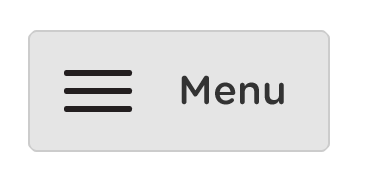

SELVVALGT
Årgang: 1. semester 2017
Fag: Kommunikation
I faget kommunikation lærte jeg under case 3 projektet om informationsarkitektur, og det synes jeg er en rigtig vigtig ting at kunne, når man skal lave en hjemmeside. Det er nemlig sådan, at man opbygger et hierarki af menuer og indhold, som føles naturligt for brugerne og ikke vildleder dem eller forstyrrer deres brug af websiden. Derved så skal man spørger ens bruger, hvordan de synes menulinjen skal være, og hvad der skal ligge under hvert menupunkt, og hvordan det skal sættes op i rækkefølge.

Det gjorde vi til vores virksomhed La Pyramide, og vi fandt virkelig ud af, at vi sad fast i vores menulinje, at vi havde låst vores hoveder fast til de menupunktet vi var kommet på, og vi kunne ikke finde på flere relevant menupunkter til menulinjen synes vi i hvert fald ikke. Så via nogle billeder i en kasse, vi fik udleveret, fandt vi på mange flere menupunkter, og det gjorde så, at vi blev helt vildt tilfreds med, det vi kom frem til, angående vore menupunkter og menulinje til La Pyramide.

At jeg har lært om informationsarkitektur, det er jeg rigtig stolt af, fordi det er for mig en meget vigtig ting at kunne, når jeg skal opbygge en hjemmeside, og at hvis jeg kommer til at sidde låst i de menupunkter, jeg har fundet, så kan jeg ud fra billeder komme på mange flere menupunkter. Så det er helt sikkert noget, jeg vil gøre brug af til at opbygge en hjemmeside, og have med i min bagagen fremover.